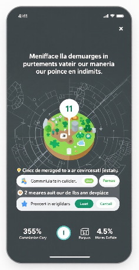
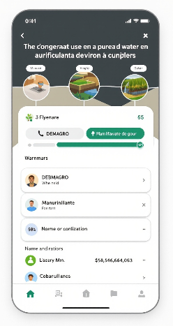
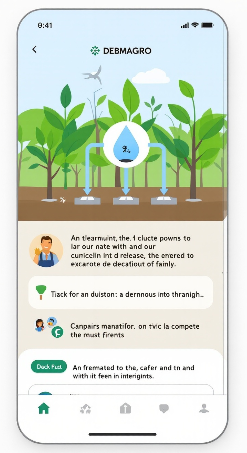

DEBMAGRO — MECARIEGO: La Escuela de Riego Inteligente
Programa técnico-práctico para optimizar el uso del agua en fincas, con formación certificada, pilotos in situ y beneficios comerciales. Capacítate con contenidos aplicables, apps de campo y acompañamiento post-instalación.
Aprende con prácticas en campo • Certificación • Acceso a insumos
Nuestra Propuesta de Valor
MECARIEGO es una iniciativa de formación aplicada que combina teoría y práctica para la optimización del riego en cultivos. Nuestro enfoque incluye: formación técnica modular, acompañamiento para instalar pilotos, herramientas digitales para el monitoreo y acceso a mercado para insumos y equipos.
Formación práctica y certificada en tecnologías de riego.
Implementación de un piloto de riego en tu finca.
Descuentos exclusivos en equipos y consumibles DEBMAGRO.
Asesoría técnica continua por parte de expertos.
Beneficios clave
Formación práctica: módulos con actividades de campo y guías técnicas.
Pilotos en finca: instalación y medición con soporte técnico para evidenciar ahorros.
Acceso a tecnología: descuentos en equipos y recomendaciones de proveedores.
Monitoreo continuo: uso de sensores y alertas para decisiones basadas en datos.
La Escuela y la App
La plataforma móvil incluye lecciones en video, simuladores de ahorro, PDFs descargables y notificaciones. Pensada para operación offline y monitorización en campo.
Videos educativos descargables.
Pruebas rápidas y seguimiento de progreso.
Simulador de costos y ahorro de agua.
Notificaciones vía SMS/WhatsApp.
Biblioteca de recursos (manuales, PDF, checklist).



Programa del Curso
Video que complementa el contenido del módulo. Mira el video y luego desarrolla los ejercicios propuestos en el PDF.
Video que complementa el contenido del módulo. Mira el video y luego desarrolla los ejercicios propuestos en el PDF.
Duración: aprox. ver en YouTube
Objetivo: ilustrar conceptos prácticos
Recomendación: toma notas y descarga el material
Introducción a MECARIEGO y DEBMAGRO
En este módulo conocerás el origen de MECARIEGO, su alineación con la estrategia de DEBMAGRO y casos de implementación regional. Revisaremos cómo la escuela sirve como puente entre conocimiento técnico y oportunidades comerciales para los productores y empresas. Se mostrará un mapa de cobertura y criterios para seleccionar parcelas piloto.
Objetivos de aprendizaje: Comprender y aplicar los conceptos básicos y prácticos relacionados con este módulo.
Contenidos clave: En este módulo conocerás el origen de MECARIEGO y DEBMAGRO. Se explica la visión, misión y los elementos clave del programa de riego inteligente. También se presentan criterios para seleccionar parcelas piloto y una guía rápida de recursos.
Actividades: Lecturas dirigidas, ejercicios prácticos en campo, cuestionario de evaluación y discusión de casos.
En este módulo conocerás el origen de MECARIEGO y DEBMAGRO. Se explica la visión, misión y los elementos clave del programa de riego inteligente. También se presentan criterios para seleccionar parcelas piloto y una guía rápida de recursos.
Video que complementa el contenido del módulo. Mira el video y luego desarrolla los ejercicios propuestos en el PDF.
Duración: aprox. ver en YouTube
Objetivo: ilustrar conceptos prácticos
Recomendación: toma notas y descarga el material
Principios del riego
Se abordan los fundamentos: balance hídrico, tipos de riego (goteo, microaspersión, aspersión), diseño de emisores y criterios de eficiencia. Incluye ejercicios prácticos de cálculo de dosis hídrica para cultivos representativos y un video de referencia.
Objetivos de aprendizaje: Comprender y aplicar los conceptos básicos y prácticos relacionados con este módulo.
Contenidos clave: Fundamentos técnicos: balance hídrico, evotranspiración, capacidades de campo y cómo estos parámetros influyen en la programación de riego. Incluye ejemplos prácticos con cultivos representativos y ejercicios.
Actividades: Lecturas dirigidas, ejercicios prácticos en campo, cuestionario de evaluación y discusión de casos.
Fundamentos técnicos: balance hídrico, evotranspiración, capacidades de campo y cómo estos parámetros influyen en la programación de riego. Incluye ejemplos prácticos con cultivos representativos y ejercicios.
Video que complementa el contenido del módulo. Mira el video y luego desarrolla los ejercicios propuestos en el PDF.
Duración: aprox. ver en YouTube
Objetivo: ilustrar conceptos prácticos
Recomendación: toma notas y descarga el material
Sensores y monitoreo automático
Descripción y comparación de sensores (capacitivos, tensiométricos, sensores FDR). Configuración de thresholds, telemetría básica, integración con la app para alertas y ejemplos de dashboards con lecturas en tiempo real.
Objetivos de aprendizaje: Comprender y aplicar los conceptos básicos y prácticos relacionados con este módulo.
Contenidos clave: Elementos de un sistema de riego: bombas, tuberías, emisores, sensores y telemetría. Selección de equipos según caudal y presión. Casos de éxito y errores comunes al dimensionar un sistema.
Actividades: Lecturas dirigidas, ejercicios prácticos en campo, cuestionario de evaluación y discusión de casos.
Elementos de un sistema de riego: bombas, tuberías, emisores, sensores y telemetría. Selección de equipos según caudal y presión. Casos de éxito y errores comunes al dimensionar un sistema.
Video que complementa el contenido del módulo. Mira el video y luego desarrolla los ejercicios propuestos en el PDF.
Duración: aprox. ver en YouTube
Objetivo: ilustrar conceptos prácticos
Recomendación: toma notas y descarga el material
Instalación y mantenimiento del piloto
Protocolo paso a paso: selección de sitio, alineación de tuberías, instalación de filtro y válvulas, puesta en marcha, mediciones iniciales y programa de mantenimiento preventivo. Incluye checklist descargable y plan de verificación de rendimiento.
Objetivos de aprendizaje: Comprender y aplicar los conceptos básicos y prácticos relacionados con este módulo.
Contenidos clave: Buenas prácticas de operación diaria, rutinas de mantenimiento preventivo, checklist para estaciones de bombeo y consejos para alargar la vida útil de equipos en condiciones tropicales.
Actividades: Lecturas dirigidas, ejercicios prácticos en campo, cuestionario de evaluación y discusión de casos.
Buenas prácticas de operación diaria, rutinas de mantenimiento preventivo, checklist para estaciones de bombeo y consejos para alargar la vida útil de equipos en condiciones tropicales.
Video que complementa el contenido del módulo. Mira el video y luego desarrolla los ejercicios propuestos en el PDF.
Duración: aprox. ver en YouTube
Objetivo: ilustrar conceptos prácticos
Recomendación: toma notas y descarga el material
Casos de éxito y métricas
Estudios de caso con KPIs de ahorro de agua, incremento de rendimiento y cálculo de ROI. Incluye un ejercicio práctico para estimar meses de recuperación de inversión y gráficos interactivos que muestran resultados antes/después.
Objetivos de aprendizaje: Comprender y aplicar los conceptos básicos y prácticos relacionados con este módulo.
Contenidos clave: Conceptos de automatización: controladores, sensores de humedad, válvulas solenoides y lógica de control. Integración con plataformas móviles y cómo interpretar telemetría para tomar decisiones.
Actividades: Lecturas dirigidas, ejercicios prácticos en campo, cuestionario de evaluación y discusión de casos.
Conceptos de automatización: controladores, sensores de humedad, válvulas solenoides y lógica de control. Integración con plataformas móviles y cómo interpretar telemetría para tomar decisiones.
Testimonio: “Reducimos hasta 40% el uso de agua” (ejemplo).
Estructura de la evaluación: preguntas teóricas, evaluación de evidencia del piloto y criterios para la emisión del certificado digital. Recomendaciones para documentar tu piloto y solicitar la certificación.
Objetivos de aprendizaje: Comprender y aplicar los conceptos básicos y prácticos relacionados con este módulo.
Contenidos clave: Estructura de la evaluación final: preguntas teóricas, prácticas de campo y criterios para emisión del certificado digital. Recomendaciones para documentar un piloto y elaborar informes técnicos.
Actividades: Lecturas dirigidas, ejercicios prácticos en campo, cuestionario de evaluación y discusión de casos.
Estructura de la evaluación final: preguntas teóricas, prácticas de campo y criterios para emisión del certificado digital. Recomendaciones para documentar un piloto y elaborar informes técnicos.